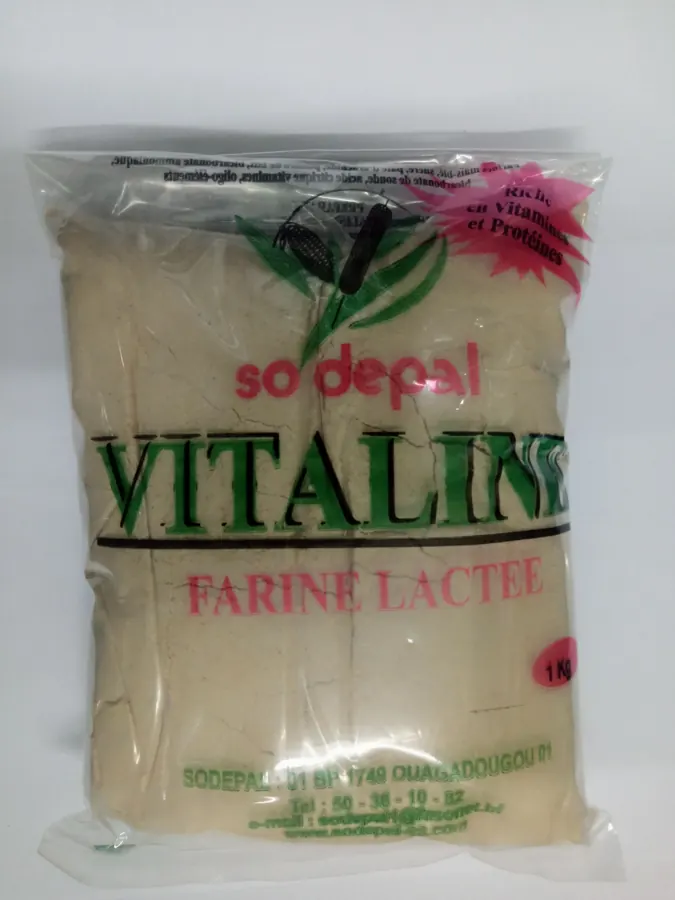

Farines infantiles enrichies
Nourrir la croissance de nos enfants
Vitaline et Vita Casui : des farines au maïs et au petit mil enrichies en protéines, vitamines et minéraux, pour le sevrage et contre les carences nutritionnelles.
Fabriqué au Burkina FasoDans notre usine de Ouagadougou
Matières premières localesMaïs, petit mil, moringa, sésame
Farines certifiées NBFProduction selon les règles HACCP
Contrôlé en laboratoireDes analyses réalisées sur place
À la une
Yolande Alexise Zoundi dirige aujourd’hui SODEPAL. Le 6 mars 2026, l’entreprise a inauguré l’extension de son usine avec le Programme alimentaire mondial : jusqu’à 36 tonnes de farines infantiles par jour, deux nouvelles farines fortifiées et des emplois pour les femmes et les jeunes.
« Cette extension nous permettra d’accroître notre production. »Yolande Alexise Zoundi, Directrice générale
Nos univers
Nous valorisons les céréales, plantes et produits du Burkina Faso dans quatre gammes complémentaires, pour toute la famille.
Qui sommes-nous ?
Créée le 23 décembre 1991 par Simone Zoundi, pionnière de l’agroalimentaire burkinabè, SODEPAL SA est une PMI au capital de 100 millions de francs CFA. Elle produit des aliments de complément nutritionnel à base de ressources locales, vendus sur le marché national et sous-régional.
Notre objectif : lutter contre la malnutrition chronique, pour le bien-être des populations.
Notre histoire
Tout commence dans les années 1970, à la Boulangerie de Gounghin, avec les premiers biscuits au petit mil de Simone Zoundi. Deux générations plus tard, la même conviction guide SODEPAL : bien nourrir les enfants avec ce que produit la terre burkinabè.
Premiers biscuits au petit mil, à la Boulangerie de Gounghin.
Le 23 décembre, Simone Zoundi crée SODEPAL à Ouagadougou.
Sous la direction de Yolande Alexise Zoundi, l’usine produit jusqu’à 36 t de farines par jour.
Pionnière de l’agroalimentaire burkinabè, fondatrice de SODEPAL et de la FIAB, Chevalier de l’Ordre national.
Son parcours →Elle dirige aujourd’hui SODEPAL et a inauguré en 2026 l’extension de l’usine : 36 tonnes de farines par jour.
Découvrir Mme Zoundi →Accompagnement sur mesure
Familles & parents
Santé, ONG & programmes nutrition
Revendeurs & distributeurs
Événements & entreprises
Approche qualité
Notre laboratoire veille à la qualité de nos produits, du choix des matières premières jusqu’au conditionnement.
Respect des règles HACCP pour l’assurance qualité de tous nos produits.
Contrôle périodique de l’application des normes nationales et internationales.
Des analyses réalisées sur place pour garantir des produits sûrs et conformes.
Revue de presse
« SODEPAL : enfants bien nourris, familles soutenues, emplois pour les jeunes, femmes autonomisées »
« Simone Zoundi : une icône de la transformation locale des produits alimentaires »
« L’unité de production de farines infantiles est fonctionnelle »